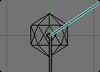
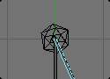
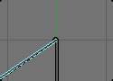
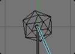
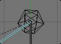
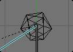
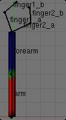
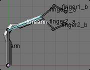

Skinning to Shapes¶
We saw in the previous page how to link (parent) whole objects to armature bones - a way to control the transform properties of this object via a rig. However, armatures are much more powerful: they can deform the shape of an object (i.e. affect its ObData data-block - its vertices or control points...).
In this case, the child object is parented (skinned) to the whole armature, so that each of its bones controls a part of the “skin” object’s geometry. This type of skinning is available for meshes, lattices, curves, surfaces, and texts (with more options for the first two types).
Bones can affect the object’s shape in two ways:
- The Envelope process is available for all type of skinnable objects - it uses the “proximity” and “influence” of the bones to determine which part of the object they can deform.
- The 顶点组 method is (obviously) reserved to meshes and lattices - one bone only affect the vertices in the group having the same name, using vertices’ weights as influence value. A much more precise method, but also generally longer to set up.
Both methods have some Common Options, and can be mixed together.
Parenting to Whole Armatures¶
Set Parent menu.
But before diving into this, let us talk about the different ways to skin (parent) an object to a whole armature - as with object skinning, there is an “old parenting” method and a new, more flexible and powerful one, based on modifiers - which allows creation of very complex setups, with objects deformed by several armatures.
For meshes and lattices only,
you can use the Ctrl-P parent shortcut in the 3D视图s
(after having selected first the “skin” object, then the armature).
The Make Parent To menu pops up, select the Armature entry.
If the skinning object is a lattice, you are done; no more options are available.
But with a child mesh, another Create 顶点组? menu appears,
with the following options - all regarding the “vertex groups” skinning method:
- With Empty Groups
- will create, if they do not already exist, empty groups, one for each bone in the skinned armature, with these bones’ names. Choose this option if you have already created (and weighted) all the vertex groups the mesh requires.
- With Envelope Weights
will create, as with Name Groups option, the needed vertex groups. However, it will also weight them according to the bones’ envelope settings (i.e. it will assign to each groups the vertices that are inside its bone’s influence area, weighted depending on their distance to this bone).
Warning
This means that if you had defined vertex groups using same names as skinned bones, their content will be completely overridden. You will get the same behavior as if you used the envelopes skinning method, but with vertex groups?
- With Automatic Weights
- Creates, as with Envelope Weights option, the needed vertex groups, with vertices assigned and weighted using the newer “bone heat” algorithm.
This “parenting” method will create an Armature modifier in the skinning object’s modifiers stack. And so, of course, adding an Armature modifier to an object is the second, new skinning method (which also works for curves/surfaces/texts...). Follow the above link to read more about this modifier’s specific options. Note that there is a way with new Armature modifiers to automatically create vertex groups and weight them; see the 顶点组 description below.
Warning
A single object can have several Armature modifiers (with e.g. different armatures, or different settings...), working on top of each other, or mixing their respective effects (depending whether their MultiModifier option is set, see their description for more details), and only one “virtual old parenting” one, which will always be at the top of the stack.
Note
Finally that for settings that are present in both the armature’s Armature panel and in the objects’ Armature modifier panel (namely, 顶点组 / VertGroups , Envelopes, Quaternion and B-Bone Rest), the modifier ones always override the armature ones. This means that if, for example, you only enable the Envelopes deformation method of the armature, and then skin it with an object using an Armature modifier, where only VertGroups is enabled, the object will only be deformed based on its “bones” vertex groups, ignoring completely the bones’ envelopes.
Common Options¶
There are two armature-global skinning options that are common to both envelopes and vertex groups methods:
- Preserve Volume (Armature modifier)
This affects the way geometry is deformed, especially at bones’ joints, when rotating them.
Without Preserve Volume, rotations at joints tend to scale down the neighboring geometry, up to nearly zero at 180 degrees from rest position. With Preserve Volume, the geometry is no longer scaled down, but there is a “gap”, a discontinuity when reaching 180 degrees from rest position.

Initial state. |

100- rotation, Preserve Volume disabled. |

180- rotation, Preserve Volume disabled. |

100- rotation, Preserve Volume enabled. |

179.9- rotation, Preserve Volume enabled. |

180.1- rotation, Preserve Volume enabled. |
{kind=link}
{kind=link}
{kind=link}
{kind=link}
{kind=link}
{kind=link}
Note
Note that the IcoSphere is deformed using the envelopes method.
Bone Deform Options¶
{kind=link}
Bone Deform Options.
The bones also have some deforming options in their sub-panels (Armature Bones panel), that you can therefore define independently for each of them.
- Deform
- By disabling this setting (enabled by default), you can completely prevent a bone from deforming the geometry of the skin object.
Envelope¶
{kind=link}
Bone influence areas for envelopes method.
Envelopes is the most general skinning method - it works with all available object types for skinning (meshes, lattices, curves, surfaces and texts). It is based on proximity between bones and their geometry, each bone having two different areas of influence, shown in the Envelope visualization:
- The inside area, materialized by the “solid” part of the bone, and controlled by both root and tip radius. Inside this zone, the geometry if fully affected by the bone.
- The outside area, materialized by the lighter part around the bone, and controlled by the Dist setting. Inside this zone, the geometry is less and less affected by the bone as it goes away - following a quadratic decay.
See also
The editing pages for how to edit these properties.
There is also a bone property, Weight (in each bone sub-panel, in 编辑模式 only, defaults is set to 1.0), that controls the global influence of the bone over the deformed object, when using the envelopes method. It is only useful for the parts of geometry that are “shared”, influenced by more than one bone (generally, at the joints...) - a bone with a high weight will have more influence on the result than one with a low weight... Note that when set to 0.0, it has the same effect as disabling the Deform option.
- Mult
- Short for ‘Multiply’. This option controls how the two deforming methods interact when they are both enabled. By default, when they are both active, all vertices belonging to at least one vertex group are only deformed through the vertex groups method - the other “orphan” vertices being handled by the envelopes one. When you enable this option, the “deformation influence” that this bone would have on a vertex (based from its envelope settings) is multiplied with this vertex’s weight in the corresponding vertex group. In other words, the vertex groups method is further “weighted” by the envelopes method.
- Radius
- Set the radius for the head and the tail of envelope bones.
Curved Bone¶
Curved Bones (previously known as B-bones) allow you make bones act like 贝塞尔曲线 segments, which results in smoother deformations for longer bones.
See also
The editing pages for how to edit these properties.
顶点组¶
Vertex groups skinning method is only available for meshes and lattices - the only objects having
vertex groups Its principle is very simple:
each bone only affects vertices belonging to a vertex group having the same name as the bone.
So if you have e.g. a forearm bone, it will only affect the forearm vertex group of its skin object(s).
The influence of one bone on a given vertex is controlled by the weight of this vertex in the relevant group.
Thus, the 权重绘制模式.
Ctrl-Tab, if a mesh is selected is most useful here, to easily set/adjust the vertices’ weights.
However, you have a few goodies when weight-painting a mesh already parented to (skinning) an armature. For these to work, you must:
- Select the armature.
- Switch to 姿态模式
Ctrl-Tab. - Select the mesh to weight.
- Hit again
Ctrl-Tabto switch to 权重绘制模式.
Now, when you select a bone of the armature (which remained in 姿态模式),
you automatically activate the corresponding vertex group of the mesh - Very handy! Obviously,
you can only select one bone at a time in this mode (so Shift-LMB clicking does not work).
This way, you can also apply to the active bone/vertex group one of the same “auto-weighting”
methods as available when doing an “old-parenting” to armature Ctrl-P:
- Select the bone (and hence the vertex group) you want.
- Hit
W, and in the Specials menu that pops up, choose either Apply Bone Envelopes to 顶点组 or Apply Bone Heat Weights to 顶点组. Once again, even though these names are plural, you can only affect one vertex group’s weights at a time with these options.
To automatically weight multiple bones, you can simply
Ctrl-Tabout of 权重绘制模式- Select the Armature. It should be in 姿态模式. If it is not, go
Ctrl-Tab - Select multiple bones
Shift-LMBor pressA(once or twice). - Select Mesh again
- If not in weight paint already, toggle back into
Ctrl-Tab - Use the
Wmenu to automatic weight. This will weight all the bones you selected in 姿态模式.

The weights of the arm vertex group. |

The weights of the forearm vertex group. |

The result when posing the armature. |

The same pose, but using envelopes method rather that vertex groups. |
{kind=link}
{kind=link}
Obviously, the same vertex can belong to several groups, and hence be affected by several bones, with a fine tuning of each bone’s influence using these vertex weights. Quite useful when you want to have a smooth joint. For example, when you skin an elbow, the upperarm vertex group contains the vertices of this part at full weight (1.0), and when reaching the elbow area, these weights decrease progressively to 0.0’ when reaching the forearm zone - and vice versa for the forearm group weights... Of course, this is a very raw example - skinning a realistic joint is a big job, as you have to carefully find good weights for each vertex, to have the most realistic behavior when bending - and this is not an easy thing!